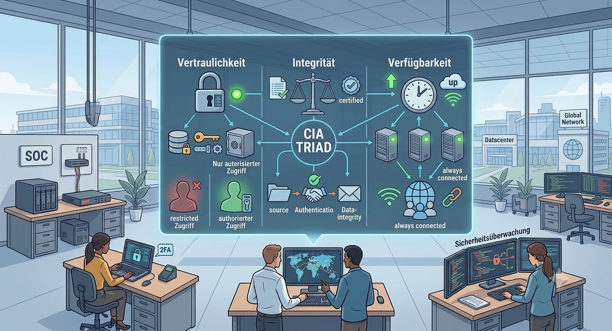

Kapitel 2: Schutzziele der Informationssicherheit sicherstellen

In diesem Kapitel werden Sie ...
- ... die Schutzziele der Informationssicherheit kennenlernen.
- ... in der Vertiefung Maßnahmen zur Sicherstellung der Vertraulichkeit kennenlernen.
- ... in der Vertiefung Maßnahmen zur Sicherstellung der Integrität kennenlernen.
- ... in der Vertiefung Maßnahmen zur Sicherstellung der Verfügbarkeit kennenlernen.
Handlungssituation
Am Montagmorgen um 07:30 Uhr herrscht Hektik in der IT-Abteilung der RECPLAST GmbH. Die neue, vollautomatische Extrusionsanlage 4 in Werkhalle 2 sollte heute nach dreiwöchiger Testphase offiziell in den Regelbetrieb gehen.
Gegen 06:45 Uhr traten jedoch zwei gravierende Vorfälle auf:
1. Ausfall der Steuerung (Extruder 4):
Das zentrale Leitstand-Terminal meldet einen Verbindungsabbruch zur SPS-Steuerung von Extruder 4. Die Anlage steht still. Bei der ersten Fehlersuche stellt der Betriebstechniker fest, dass der Haupt-Switch im Hallenverteiler stromlos ist, weil das Netzteil ausgefallen ist. Ein redundantes Netzteil oder eine USV war für diesen Switch laut Dokumentation nicht vorgesehen. Die Produktionsleitung schätzt den Ausfallschaden derzeit auf ca. 12.000 € pro Stunde.
2. Unstimmigkeiten bei den Mischungsverhältnissen:
Parallel meldet die Qualitätskontrolle ein Problem bei Extruder 2: Die Mischungsrezeptur für die Herstellung der Recycling-Kunststoffgranulate stimmte in den letzten Nachtschicht-Protokollen nicht mit den Vorgaben des Labor-ERP-Systems überein. Der Anteil des Additivs REC-Poly-3 wurde im System von 4.5% auf 14.5% geändert. Niemand aus der Laborleitung hat diese Änderung freigegeben oder durchgeführt. Durch das falsche Mischungsverhältnis ist eine Charge von 8 Tonnen Granulat unbrauchbar geworden.
Als Sie zusammen mit Ihrer Ausbilderin, Frau Weber (CISO der RECPLAST GmbH), den Vorfall im Leitstand untersuchen, fällt Ihnen ein USB-Stick auf, der am USB-Port des Leitstand-PCs steckt. Auf dem Gehäuse steht handschriftlich "Update_Extruder_v2.4". Ein Schichtleiter erklärt: "Der Stick lag Ende letzter Woche auf dem Tisch. Ein Kollege aus der Fremdfirma für die Anlagenwartung hat gemeint, da seien die neuen Kennlinien drauf, und hat ihn kurz eingesteckt."
Zudem wird festgestellt, dass sich alle Techniker für die Bedienung der Terminals ein gemeinsames Gruppenkonto (betrieb_halle2) mit dem Passwort Recplast2024! teilen.
Kompetenz 2.0: Schutzziele identifizieren
Die ChangeIT GmbH wird konsultiert und Frau Weber übergibt Ihnen die Protokolle der Vorfälle und ergänzt:
"Das ist ein Totalschaden für unsere Prozesse. Wir müssen der Geschäftsleitung bis heute Nachmittag eine erste Analyse vorlegen. Bitte arbeiten Sie die Vorfälle systematisch auf: Welche Schutzziele wurden hier verletzt, an welchen Stellen haben unsere Maßnahmen versagt und wie verhindern wir so etwas für die Zukunft?"
Arbeitsauftrag A|2.0: CIA-Triade analysieren
Aufgabe 1
Analysieren Sie die Vorfälle bei Extruder 2 und 4 sowie die Bedienung der Terminals. Welche Probleme sind hier aus Sicht der Informationssicherheit aufgetreten?
Aufgabe 2
Erstellen Sie sich eine Übersicht der Schutzziele der Informationssicherheit mithilfe des Materials M|2.0.0: CIA-Triade. Notieren Sie sich die drei übergeordneten Schutzziele auf Deutsch und Englisch. Fertigen Sie anschließend eine Liste der Thematiken an, die dem jeweiligen Bereich zuzuordnen sind.
Aufgabe 3
Ordnen Sie die in Aufgabe 1 identifizierten Probleme den Schutzzielen und ggf. wenn möglich den nachgeordneten Themenschwerpunkten zu.
Material M|2.0.0: CIA-Triade
In einer zunehmend vernetzten Welt verarbeiten Organisationen täglich riesige Mengen sensibler Daten. Um Systeme, Prozesse und Informationen wirksam vor Bedrohungen zu schützen, bildet die sogenannte CIA-Triade das theoretische und praktische Fundament der modernen IT-Sicherheit. Das Akronym leitet sich aus den englischen Begriffen Confidentiality (Vertraulichkeit), Integrity (Integrität) und Availability (Verfügbarkeit) ab. Diese drei Schutzziele definieren die grundlegenden Anforderungen an einen sicheren Umgang mit Daten und IT-Infrastrukturen.
Vertraulichkeit (Confidentiality)
Das Schutzziel der Vertraulichkeit stellt sicher, dass Informationen ausschließlich Personen, Systemen oder Prozessen zugänglich sind, die eine ausdrückliche Berechtigung besitzen. Unbefugte Einblicke – sei es durch externe Angreifer oder nicht autorisierte interne Mitarbeitende – müssen konsequent verhindert werden. Dies betrifft insbesondere sensible Betriebsgeheimnisse, personenbezogene Daten, Finanzkennzahlen sowie Zugangsdaten.
Um Vertraulichkeit in der Praxis zu gewährleisten, kommen sowohl technische als auch organisatorische Schutzmaßnahmen zum Einsatz. Auf technischer Ebene sichern kryptografische Verfahren Daten in allen Zuständen: ob ruhend (Data at Rest), während der Übertragung (Data in Transit) oder bei der Verarbeitung (Data in Use). Ergänzt wird dies durch ein striktes Rechtemanagement nach dem Principle of Least Privilege (Minimalprinzip), rollenbasierte Zugriffskontrollen (RBAC) sowie die Pflicht zur Multi-Faktor-Authentifizierung (MFA) für alle Systemzugänge. Auf organisatorischer Seite unterstützen Vertraulichkeitsvereinbarungen (NDAs), die systematische Klassifizierung von Dokumenten (etwa in öffentlich, intern oder streng vertraulich) sowie physische Zutrittskontrollen zu Rechenzentren und Leitständen diesen Schutz.
Integrität (Integrity)
Während die Vertraulichkeit vor unbefugtem Lesen schützt, garantiert das Schutzziel der Integrität die Korrektheit, Vollständigkeit und Unversehrtheit von Daten und Systemfunktionen. Es stellt sicher, dass Informationen nicht unbefugt, unbeabsichtigt oder unbemerkt verändert, gelöscht oder gefälscht werden können. Dies ist essenziell für die Zuverlässigkeit von Buchhaltungsdaten, Produktionsrezepturen, Steuerungsbefehlen in Industrieanlagen sowie für die Gültigkeit von Systemkonfigurationen.
Zur Sicherung der Integrität dienen kryptografische Prüfsummen (wie Hashwerte mit SHA-256) und digitale Signaturen, die jede Modifikation an Daten unverzüglich erkennbar machen. Auf Prozessebene verhindern das Vier-Augen-Prinzip bei kritischen Freigaben sowie die strikte Trennung von Entwicklungs-, Test- und Produktionsumgebungen ungewollte oder manipulierte Eingriffe. Zudem fangen automatische Plausibilitätsprüfungen in Anwendungen fehlerhafte Eingaben ab, während revisionssichere WORM-Speichermedien (Write-Once-Read-Many) und Versionierungssysteme eine lückenlose Historisierung aller Änderungen gewährleisten.
Verfügbarkeit (Availability)
Das dritte Schutzziel, die Verfügbarkeit, gewährleistet, dass autorisierte Nutzerinnen und Nutzer jederzeit und störungsfrei auf benötigte Daten, IT-Systeme und Dienstleistungen zugreifen können. Da ein Systemausfall ganze Geschäftsprozesse oder Produktionsstraßen vollständig lähmen kann, steht die Minimierung von ungeplanten Ausfallzeiten (Downtime) im Zentrum dieser Säule.
Die technische Ausfallsicherheit wird vor allem durch Redundanz erreicht: Kritische Komponenten wie Netzteile, Festplattenverbünde (RAID), Netzwerkpfade, Server-Cluster und gesamte Rechenzentren werden mehrfach ausgelegt, um sogenannte Single Points of Failure konsequent zu vermeiden. Ergänzend sichern unterbrechungsfreie Stromversorgungen (USV), Notstromaggregate und redundante Klimaanlagen die physische Betriebsbereitschaft von Serverräumen. Gegen Datenverlust und Großschadenslagen schützen regelmäßige Datensicherungen (beispielsweise nach der bewährten 3-2-1-Regel) sowie ausgearbeitete Wiederherstellungs- und Notfallpläne (Disaster Recovery und Business Continuity Plans). Zusätzlich fangen Load Balancer und automatisierte Überlastungsschutzsysteme (DDoS-Protection) Angriffe ab, die darauf abzielen, Dienste durch gezielte Datenüberflutung außer Betrieb zu setzen.
Kompetenz 2.1: Vertraulichkeit sicherstellen
Während Sie noch am Leitstand stehen, weist Frau Weber auf den eingesteckten USB-Stick und den Notizzettel mit dem gemeinsamen Passwort: "Dass hier jeder ungehindert reinschauen und Daten abgreifen kann, ist ein untragbarer Zustand für die Vertraulichkeit unserer Daten. Lassen Sie uns diesen Bereich jetzt gründlich durchleuchten: Welche technischen und organisatorischen Möglichkeiten haben wir überhaupt, um Vertraulichkeit herzustellen, und welche davon passen zu den Abläufen hier bei RECPLAST?"
Arbeitsauftrag A|2.1: Maßnahmen zur Vertraulichkeit kennenlernen
Aufgabe 1
Fassen Sie kurz in eigenen Worten zusammen, welches der Probleme in der RECPLAST GmbH den Bereich der Vertraulichkeit betrifft.
Aufgabe 2
Welche Maßnahmen können in einem Unternehmen ergriffen werden, um die Vertraulichkeit sicherzustellen? Informieren Sie sich in M|2.1.0: Deep Dive – Schutzziel Vertraulichkeit hierüber.
Aufgabe 3
Wählen Sie aus den Maßnahmen die am besten geeigneten aus, um die Vertraulichkeit im Leitstand und an den Extrusionsanlagen der RECPLAST GmbH nachhaltig herzustellen.
Begründen Sie Ihre Auswahl gegenüber der IT-Sicherheitsbeauftragten Frau Weber:
- Warum sind genau diese Maßnahmen für die RECPLAST GmbH verhältnismäßig und realistisch?
- Welche Maßnahmen aus dem Katalog würden Sie für die Fertigungshalle eher nicht empfehlen und warum?
Material M|2.1.0: Deep Dive – Schutzziel Vertraulichkeit
1. Was bedeutet Vertraulichkeit?
Das Schutzziel Vertraulichkeit fordert, dass Informationen, Daten und IT-Systeme ausschließlich autorisierten Personen, Prozessen oder IT-Systemen zugänglich sind. Unbefugte – egal ob externe Angreifer oder nicht-berechtigte Kolleginnen und Kollegen im eigenen Unternehmen – dürfen keinen Einblick erhalten.
Ein Verlust der Vertraulichkeit liegt bereits dann vor, wenn vertrauliche Daten gelesen, kopiert oder offengelegt werden, ohne dass dabei zwangsläufig Daten verändert oder gelöscht werden müssen.
2. Wie stellen wir Vertraulichkeit sicher?
Um Vertraulichkeit in einer modernen IT- und Produktionsumgebung (OT) durchzusetzen, kombinieren IT-Sicherheitsverantwortliche technische und organisatorische Maßnahmen (TOMs).
A. Technische Maßnahmen
- Verschlüsselung (Kryptografie):
- Data in Transit (Übertragung): Verschlüsselung von Netzwerkverbindungen (z. B. via TLS/HTTPS, IPsec, SSH), damit Datenpakete auf dem Leitungsweg nicht mitgeschnitten werden können.
- Data at Rest (Speicherung): Festplatten- und Datenbankverschlüsselung (z. B. BitLocker, LUKS, AES-256), damit Daten bei Verlust oder Diebstahl von Datenträgern unlesbar bleiben.
- Data in Use (Verarbeitung): Schutz von Daten im Arbeitsspeicher vor unbefugtem Auslesen anderer Prozesse.
- Identitäts- und Zugriffsmanagement (IAM):
- Personalisierte Accounts: Jede Person erhält ein individuelles Benutzerkonto. Shared Accounts (gemeinsam genutzte Konten) sind strikt verboten.
- Starke Authentifizierung: Einsatz von Multi-Faktor-Authentifizierung (MFA/2FA) mittels Passwörtern, Hardware-Token oder Biometrie.
- Rechtestrukturierung: Rechtevergabe nach dem Principle of Least Privilege (Minimalprinzip) über Rollen-basierte Zugriffskontrollen (RBAC). Jede/r sieht nur das, was für die tägliche Arbeit zwingend notwendig ist (Need-to-know-Prinzip).
- Netzwerksegmentierung:
- Trennung von Office-Netzen, Produktionsnetzen (OT/VLANs) und Gast-WLANs durch Firewalls, um unbefugte Datenströme zwischen den Segmenten zu blockieren.
- Schnittstellen- und Endgeräteschutz (Endpoint Security):
- Logische Sperrung ungenutzter Ports (z. B. USB-Ports per Group Policy oder Endpoint-Protection-Software deaktivieren).
B. Organisatorische & Physische Maßnahmen
- Klassifizierung von Informationen: Einstufung von Dokumenten und Daten in Vertraulichkeitsstufen (z. B. Öffentlich, Intern, Vertraulich, Streng vertraulich) inklusive entsprechender Handhabungsvorschriften.
- Physische Zutrittskontrollen: Sicherung von Serverräumen, Leitständen und Archiven durch Schließanlagen, RFID-Chipkarten, Biometrie und Besucherdokumentation.
- Betriebsvereinbarungen & Guidelines: Verpflichtung auf das Datengeheimnis, Sicherheitsrichtlinien zur Nutzung von Wechselmedien und Clean-Desk-Policies.
- Awareness-Schulungen: Regelmäßige Trainings der Belegschaft gegen Social-Engineering-Angriffe (z. B. Phishing, Shoulder Surfing, Tailgating/Huckepackmitnahme).
Arbeitsauftrag A|2.2: Asymmetrische und Symmetrische Verschlüsselung unterscheiden
Frau Weber blickt auf Ihren Entwurf für die OT-Infrastruktur und nickt:
"Ein wichtiger Punkt für die Vertraulichkeit ist die Verschlüsselung. Wir müssen künftig die Übertragung der hochsensiblen Rezepturdaten vom zentralen Labor-ERP-System zu den Leitständen in Hallenverteiler 2 absichern. Wenn hier jemand im Netzwerk mithört, liegen unsere Firmengeheimnisse offen.
Ein Kollege schlägt vor, die Daten einfach mit einem Passwort per symmetrischer Verschlüsselung zu sichern. Ein anderer möchte lieber asymmetrische Verschlüsselung einsetzen, weil er meint, das wäre viel sicherer."
Aufgabe 1
Beschreiben Sie kurz, welche Gefahr für die Vertraulichkeit besteht, wenn das Labor-ERP-System die neuen Kunststoff-Rezepturen im Klartext an die Extrusionsanlagen sendet.
Aufgabe 2
Erläutern Sie das grundlegende Problem des Schlüsselaustauschs (Key Distribution Problem), wenn das Labor und alle 12 Leitstände in den Hallen ausschließlich ein einziges, gemeinsames symmetrisches Passwort nutzen würden.
Aufgabe 3
Informieren Sie sich in den bereitgestellten Materialien über die Funktionsweisen der Kryptografie und bearbeiten Sie folgende Punkte:
- M|2.2.0: Symmetrische Verschlüsselung: Erklären Sie in eigenen Worten das Funktionsprinzip sowie die wesentlichen Vor- und Nachteile.
- M|2.2.1: Asymmetrische Verschlüsselung: Erläutern Sie das Konzept des Schlüsselpaares (Public Key und Private Key). Gehen Sie darauf ein, welcher Schlüssel zum Verschlüsseln und welcher zum Entschlüsseln genutzt wird.
- M|2.2.2: Hybride Verschlüsselung: Stellen Sie dar, wie das hybride Verfahren die Vorteile beider Ansätze kombiniert und wo es eingesetzt wird.
Aufgabe 4
Welches Verschlüsselungsverfahren (symmetrisch, asymmetrisch oder hybrid) empfehlen Sie Frau Weber für die automatische Übertragung der Rezepturdaten über das Firmennetzwerk?
Material M|2.2.0: Symmetrische Verschlüsselung
Die symmetrische Verschlüsselung gehört zu den ältesten und grundlegendsten Verfahren der Kryptografie. Ihr zentrales Funktionsprinzip beruht auf der Verwendung eines einzigen, identischen Schlüssels (Secret Key) für sowohl die Ver- als auch die Entschlüsselung einer Nachricht. Wenn ein Klartext in einen unlesbaren Chiffretext umgewandelt werden soll, verarbeitet ein mathematischer Algorithmus die Ursprungsdaten zusammen mit diesem geheimen Schlüssel. Auf der Empfängerseite wird exakt derselbe Schlüssel benötigt, um den Chiffretext mithilfe des umgekehrten Algorithmus wieder in den ursprünglichen Klartext zurückzuverwandeln. Sender und Empfänger müssen somit zwingend über denselben Geheimtext-Schlüssel verfügen.
In der modernen Informationstechnik findet die symmetrische Verschlüsselung breite Anwendung, insbesondere dort, wo große Datenmengen effizient geschützt werden müssen. Typische Einsatzbereiche sind die Festplatten- und Datenverschlüsselung im Ruhezustand (Data at Rest), beispielsweise durch Technologien wie BitLocker unter Windows oder LUKS unter Linux. Ebenso werden symmetrische Verfahren wie der AES-Standard (Advanced Encryption Standard) genutzt, um die eigentlichen Nutzdaten in gesicherten Netzwerkverbindungen (z. B. bei VPN-Tunneln via IPsec oder HTTPS-Verbindungen im Web) zu übertragen.
Der größte Vorteil symmetrischer Verschlüsselungsverfahren liegt in ihrer extrem hohen Rechengeschwindigkeit und Effizienz. Da die zugrundeliegenden mathematischen Operationen vergleichsweise einfach aufgebaut sind, können selbst riesige Dateien oder kontinuierliche Datenströme in Echtzeit und ohne spürbare Verzögerung ver- und entschlüsselt werden. Zudem bieten moderne Standardverfahren wie AES bei ausreichender Schlüssellänge (z. B. 256 Bit) ein extrem hohes Sicherheitsniveau gegen Brute-Force-Angriffe.
Dem steht jedoch ein gravierender Nachteil gegenüber: das sogenannte Schlüsselverteilungsproblem (Key Distribution Problem). Bevor zwei Parteien vertraulich miteinander kommunizieren können, muss der geheime Schlüssel über einen absolut sicheren Kanal ausgetauscht werden. Wird der Schlüssel während der Übertragung von Dritter Seite abgefangen, ist die gesamte Vertraulichkeit kompromittiert. Zudem skaliert das Verfahren in Netzwerken schlecht: Sollen viele Parteien paarweise vertraulich miteinander kommunizieren, steigt die Anzahl der benötigten geheimen Schlüssel exponentiell an, was die Schlüsselverwaltung im Betrieb enorm erschwert.
Material M|2.2.1: Asymmetrische Verschlüsselung
Die asymmetrische Verschlüsselung – auch bekannt als Public-Key-Kryptografie – löst das fundamentale Problem des sicheren Schlüsselaustauschs, indem sie ein mathematisch verknüpftes Schlüsselpaar einsetzt. Dieses Paar besteht aus einem öffentlichen Schlüssel (Public Key) und einem privaten Schlüssel (Private Key). Während der öffentliche Schlüssel gefahrlos allen Kommunikationspartnern zugänglich gemacht werden darf, muss der private Schlüssel streng geheim bleiben und darf seinen Besitzer niemals verlassen. Das zentrale Funktionsprinzip lautet: Eine Nachricht, die mit einem bestimmten öffentlichen Schlüssel verschlüsselt wurde, kann ausschließlich mit dem dazugehörigen, einzigartigen privaten Schlüssel wieder entschlüsselt werden. Ein Rückschluss vom öffentlichen auf den privaten Schlüssel ist nach heutigem Stand der Technik mathematisch praktisch unmöglich.
Eingesetzt wird die asymmetrische Verschlüsselung vorrangig überall dort, wo Partner ohne vorherigen sicheren Kontakt vertraulich miteinander kommunizieren müssen oder die Identität der Gegenseite nachgewiesen werden soll. Neben der reinen Datenverschlüsselung bildet sie das Fundament für digitale Signaturen (z.B. im E-Mail-Verkehr mit S/MIME oder PGP) sowie für digitale Zertifikate im Web. Wenn ein Browser eine sichere HTTPS-Verbindung zu einem Webserver aufbaut, wird die Identität des Anbieters über asymmetrische Zertifikate (Public Key Infrastructure, PKI) nachgewiesen und der erste Kontaktaufbau abgesichert.
Der herausragende Vorteil dieses Verfahrens liegt in der eleganten Lösung des Schlüsselverteilungsproblems. Da der öffentliche Schlüssel überall frei verteilt werden kann, entfällt die Notwendigkeit eines geheimen Kanals für den Schlüsselaustausch. Zudem skaliert das System hervorragend: Jede Komponente im Netzwerk benötigt lediglich ihr eigenes Schlüsselpaar, um vertraulich mit beliebig vielen anderen Partnern zu kommunizieren.
Hauptnachteil der asymmetrischen Verschlüsselung ist jedoch ihre sehr geringe Rechengeschwindigkeit. Die zugrundeliegenden komplexen mathematischen Operationen (wie das Faktorisieren sehr großer Primzahlen oder Berechnungen auf elliptischen Kurven) erfordern erhebliche Rechenleistung. Für das Ver- und Entschlüsseln großer Datenmengen oder kontinuierlicher Datenströme ist das Verfahren daher viel zu langsam und im Betriebsalltag unpraktikabel.
Material M|2.2.2: Hybride Verschlüsselung
Die hybride Verschlüsselung vereint die spezifischen Stärken der symmetrischen und der asymmetrischen Verschlüsselung in einem gemeinsamen Verfahren. Sie löst damit das grundlegende Dilemma der modernen Kryptografie: die Wahl zwischen der hohen Rechengeschwindigkeit symmetrischer Algorithmen und dem komfortablen, sicheren Schlüsselaustausch asymmetrischer Verfahren. Das Funktionsprinzip teilt den Verschlüsselungsprozess in zwei Schritte auf. Für die eigentliche Nachricht wird zunächst ein einmaliger, zufällig generierter symmetrischer Schlüssel erzeugt – der sogenannte Sitzungsschlüssel (Session Key). Die eigentlichen Nutzdaten werden mit diesem Sitzungsschlüssel extrem schnell symmetrisch verschlüsselt. Anschließend wird der Sitzungsschlüssel selbst mit dem öffentlichen Schlüssel (Public Key) des Empfängers asymmetrisch verschlüsselt. Beide Teile – der symmetrisch verschlüsselte Text und der asymmetrisch verschlüsselte Sitzungsschlüssel – werden zusammen an den Empfänger übertragen.
Der Empfänger nutzt nach dem Empfang seinen eigenen privaten Schlüssel (Private Key), um den Sitzungsschlüssel zu entschlüsseln. Mit dem so gewonnenen Klartext-Sitzungsschlüssel kann er im nächsten Schritt die eigentliche Nachricht blitzschnell symmetrisch entschlüsseln. Durch diese Kombination entfällt die Notwendigkeit, vorab einen geheimen Schlüssel über einen unsicheren Kanal auszutauschen, während gleichzeitig die hohe Verarbeitungsgeschwindigkeit für große Datenmengen erhalten bleibt.
In der Praxis ist die hybride Verschlüsselung der weltweite Standard für fast alle modernen Kommunikationsprotokolle. Sie bildet das Rückgrat der Transport Layer Security (TLS/SSL) bei HTTPS-Verbindungen im Internet, sichert den Datenaustausch in Virtual Private Networks (VPNs) ab und kommt bei der verschlüsselten E-Mail-Übertragung (z.B. via S/MIME oder PGP) sowie bei sicheren SSH-Verbindungen zur Serververwaltung zum Einsatz.
Der entscheidende Vorteil dieses Verfahrens ist die optimale Kombination aus Effizienz und Sicherheit. Selbst riesige Datenmengen oder kontinuierliche Datenströme können ohne spürbare Performance-Einbußen geschützt werden, während das Schlüsselverteilungsproblem vollständig gelöst ist. Als einziger relativer Nachteil kann der leicht erhöhte organisatorische und technische Systemaufwand genannt werden, da beide Verschlüsselungsarten implementiert und eine geeignete Infrastruktur zur Verwaltung der öffentlichen Schlüssel (PKI) bereitgestellt werden muss.
Arbeitsauftrag A|2.3: Multi-Faktor-Authentifizierung durchführen
Frau Weber ruft Sie an ihren Bildschirm im IT-Büro:
"Wir haben den Vorfall in Werkhalle 2 weiter analysiert. Dass sich alle Techniker das Sammelkonto betrieb_halle2 mit dem Passwort Recplast2024! teilen, war ein offenes Scheunentor für den unbefugten Zugriff. Jeder, der den Zettel am Leitstand liest, kann sich als Hallenpersonal ausgeben. Wir müssen auf individuelle Benutzerkonten umstellen. Aber ein einfaches Passwort reicht mir für den Zugriff auf die Steuerungsterminals nicht mehr aus – Passwörter werden aufgeschrieben, erraten oder weitergegeben. Wir müssen eine Multi-Faktor-Authentifizierung (MFA) einführen. Vor allem für den Schnellzugriff an den Terminals in der Fertigung und den Remote-Zugriff der externen Wartungstechniker müssen wir entscheiden, wie wir die drei Kategorien der Authentifizierung sinnvoll kombinieren."
Aufgabe 1
Erläutern Sie, warum die bisherige Authentifizierung über das alleinige Passwort Recplast2024! am Leitstand das Schutzziel Vertraulichkeit (sowie die Zurechenbarkeit) verletzt.
Aufgabe 2
Beschreiben Sie das fundamentale Sicherheitsrisiko, wenn sich ein Authentifizierungsverfahren ausschließlich auf den Faktor Wissen (also das Passwort wissen) stützt.
Aufgabe 3
Informieren Sie sich in den bereitgestellten Materialien über die drei Kategorien der Authentifizierung und bearbeiten Sie folgende Punkte:
- M|2.3.0: Faktor Wissen (Passwörter und Geheimnisse): Erklären Sie das Funktionsprinzip dieser Kategorie. Beschreiben Sie, welche Kriterien ein sicheres Passwort erfüllen muss und warum Hashfunktionen bei der Speicherung auf Servern eingesetzt werden.
- Material M|2.3.1: Faktor Besitz (Hardware-Token, TOTP und Passkeys): Erläutern Sie das Prinzip des Besitz-Nachweises. Stellen Sie die Funktionsweisen von physischen Token (z. B. RFID-Chips/Hardware-Keys) sowie den logischen Verfahren TOTP (zeitbasierte Einmalpasswörter) und Passkey (FIDO2/WebAuthn) dar.
- Material M|2.3.2: Faktor Biometrie / Inhärenz (Körperliche Merkmale): Erklären Sie, wie die Identifikation über körperliche Merkmale funktioniert. Nennen Sie die wesentlichen Vorteile und Risiken.
Aufgabe 4
Definieren Sie kurz, ab wann eine Anmeldung formal als Multi-Faktor-Authentifizierung (MFA) bzw. Zwei-Faktor-Authentifizierung (2FA) gilt.
Aufgabe 5
Kommen Sie zurück auf die Bedienung der Leitstände in Werkhalle 2 sowie den Remote-Zugriff der externen Wartungsfirma:
- Szenario A (Leitstand in der Fertigungshalle): Wählen Sie eine geeignete Kombination aus zwei Faktoren (aus Wissen, Besitz oder Biometrie) für die Schichtarbeiter direkt an den Extrusionsanlagen. Begründen Sie Ihre Wahl im Hinblick auf Praxistauglichkeit (z. B. Arbeiten mit Handschuhen, schnelle Anmeldung) und Sicherheit.
- Szenario B (Remote-Zugriff der Wartungsfirma): Welches MFA-Verfahren empfehlen Sie für den externen Fernzugriff von Wartungstechnikern der ChangeIT GmbH auf die Steuerungssysteme der RECPLAST GmbH?
Begründen Sie Ihre Entscheidungen.
Material M|2.3.0: Faktor Wissen (Passwörter und Geheimnisse)
Die Authentifizierung über den Faktor Wissen ist das historisch älteste und am weitesten verbreitete Verfahren zur Identitätsprüfung in der IT. Das Grundprinzip ist simpel: Ein Benutzer beweist seine Identität gegenüber einem System, indem er eine Information angibt, die theoretisch nur ihm allein bekannt sein sollte. Die typischsten Vertreter dieser Kategorie sind Passwörter, Passphrasen, PINs (Personal Identification Numbers) oder Antworten auf Sicherheitsfragen. Da der Server die eingegebene Information mit dem hinterlegten Soll-Wert vergleicht, findet bei erfolgreicher Übereinstimmung der Zugriff statt.
In der Unternehmenspraxis stellt der Faktor Wissen jedoch eine der größten Schwachstellen für die Vertraulichkeit dar. Passwörter werden von Nutzern häufig zu kurz gewählt, für mehrere Dienste wiederverwendet, auf Notizzettel geschrieben oder fallen Social-Engineering-Angriffen (wie Phishing) zum Opfer. Ein sicheres Passwort sollte daher eine ausreichende Länge (mindestens 12 bis 16 Zeichen) aufweisen und eine Kombination aus Groß- und Kleinbuchstaben, Zahlen sowie Sonderzeichen enthalten. Noch sicherer sind sogenannte Passphrasen – lange, leicht merkbare Satzkonstruktionen.
Um das Risiko von gestohlenen oder erratenen Kennwörtern zu minimieren, dürfen Passwörter auf Servern niemals im Klartext gespeichert werden. Stattdessen werden sie mithilfe kryptografischer Einwegfunktionen (Hashfunktionen wie bcrypt oder Argon2) unter Beigabe eines zufälligen Werts (Salt) verarbeitet. Der größte systematische Nachteil des Faktors Wissen bleibt jedoch bestehen: Sobald eine andere Person das Geheimnis erfährt – sei es durch Blicke über die Schulter (Shoulder Surfing), Datenlecks oder Schwachstellen im System – kann sie sich ohne jegliche Hürde für den rechtmäßigen Nutzer ausgeben.
Material M|2.3.1: Faktor Besitz (Hardware-Token, TOTP und Passkeys)
Der Faktor Besitz basiert darauf, dass der Benutzer seine Identität durch den physikalischen oder logischen Nachweis eines Gegenstandes belegt, den nur er besitzt. Das Funktionsprinzip verlangt, dass der Benutzer Zugriff auf dieses spezifische Objekt hat, um eine Authentifizierung erfolgreich abzuschließen. Klassische physische Beispiele hierfür sind RFID-Chipkarten für Schließsysteme, USB-Hardware-Token (z. B. YubiKeys) oder Chipkartenleser.
In der modernen IT-Sicherheit haben sich vor allem zwei possession-basierte Verfahren etabliert:
- Time-based One-time Password (TOTP): Hierbei generiert eine App auf einem registrierten Gerät (z. B. Smartphone) alle 30 bis 60 Sekunden einen neuen, einmalig gültigen 6-stelligen Code. Dies geschieht auf Basis eines gemeinsamen Geheimnisses (Shared Secret) und der exakten Uhrzeit. Der Code beweist, dass der Nutzer das registrierte Gerät aktuell besitzt.
- Passkey: Dies ist ein hochmoderner Standard (FIDO2/WebAuthn), der das klassische Passwort vollständig ersetzt. Das Gerät des Nutzers (z. B. Smartphone, Laptop oder Security-Key) speichert einen eindeutigen privaten Schlüssel (Private Key). Bei der Anmeldung fordert der Server das Gerät auf, eine Challenge kryptografisch zu signieren. Der Nachweis erfolgt ausschließlich über den Besitz dieses kryptografischen Schlüssels auf dem physikalischen Gerät.
Der entscheidende Vorteil des Faktors Besitz liegt in seiner Resistenz gegen reine Online-Passwort-Diebstähle oder Phishing-Angriffe (insbesondere bei FIDO2/Passkeys). Ein Angreifer, der lediglich ein Passwort kennt, kann sich ohne das physische Gerät nicht anmelden. Ein Nachteil besteht im logistischen Aufwand: Geht der Gegenstand verloren, beschädigt oder wird das Smartphone gestohlen, sind strukturierte Wiederherstellungsprozesse (Recovery-Prozesse) erforderlich, um den Nutzer nicht dauerhaft auszusperren.
Material M|2.3.2: Faktor Biometrie / Inhärenz (Körperliche Merkmale)
Der Faktor Biometrie (auch als Inhärenz bezeichnet) nutzt unverwechselbare, körperliche oder verhaltensbedingte Eigenschaften eines Menschen zur Authentifizierung. Das zugrundeliegende Prinzip lautet: Der Benutzer weist nach, wer er ist. Da biometrische Merkmale fest mit der Person verbunden sind, können sie im Gegensatz zu Passwörtern nicht vergessen und im Gegensatz zu Hardware-Token nicht zu Hause liegen gelassen werden. Zu den am häufigsten genutzten biometrischen Verfahren gehören der Fingerabdruckscan, die Gesichtserkennung (Face ID), der Iris-Scan sowie die Venenerkennung.
Eingesetzt wird die Biometrie heute flächendeckend bei der Freischaltung von mobilen Endgeräten (Smartphones, Tablets), an modernen Zutrittskontrollsystemen für Sicherheitsbereiche (z. B. Rechenzentren) sowie als lokaler Freigabemechanismus bei Passkey-Anmeldungen. Die Sensoren erfassen die biologischen Daten, wandeln sie in ein mathematisches Muster (Template) um und vergleichen dieses mit dem lokal abgespeicherten Referenzmuster.
Der größte Vorteil der Biometrie liegt in der hervorragenden Benutzerfreundlichkeit und Schnelligkeit. Die Freigabe erfolgt in Sekundenbruchteilen, ohne dass sich der Nutzer komplexe Zeichenfolgen merken muss. Zudem ist eine Weitergabe der Zugangsdaten an Kollegen (z. B. im Schichtbetrieb) nahezu ausgeschlossen.
Dennoch birgt die Biometrie spezifische Nachteile und Risiken: Ein biometrisches Merkmal ist niemals geheim – Fingerabdrücke werden auf Oberflächen hinterlassen und Gesichter sind öffentlich sichtbar. Wird ein biometrischer Datensatz einmal kompromittiert oder nachgebildet (z. B. durch hochauflösende Attrappen), kann das Merkmal im Gegensatz zu einem Passwort niemals geändert werden – ein Mensch hat schließlich nur einen Satz Fingerabdrücke. Zudem müssen bei der Speicherung und Verarbeitung biometrischer Daten strengste Datenschutzanforderungen eingehalten werden.
Arbeitsauftrag A|2.4: Benutzer und Rechtevergabe planen
Nachdem Sie gemeinsam mit Frau Weber die Multi-Faktor-Authentifizierung (MFA) für die Terminals in Werkhalle 2 geplant haben, steht der nächste Schritt an: Das gemeinsame Sammelkonto betrieb_halle2 muss endgültig gelöscht und durch ein strukturiertes, individuelles Benutzermanagement ersetzt werden.
Frau Weber erklärt das Ziel der Maßnahme:
"MFA nützt uns nichts, wenn am Ende zwar jeder Techniker sein eigenes Login hat, aber alle dieselben Vollzugriffsrechte besitzen. Letzte Woche hat ein Azubi aus Versehen die Extruder-Temperatureinstellungen einer Anlage im System überschrieben – einfach, weil sein Account dieselben Rechte hatte wie der des Fertigungsleiters. Wir brauchen ein klares Rechtekonto-Konzept: Jeder Mitarbeiter darf nur genau das tun und sehen, was er für seine tägliche Arbeit wirklich braucht. Zudem können wir nicht für jeden einzelnen Mitarbeiter händisch Rechte vergeben und pflegen – bei Personalwechseln blickt sonst keiner mehr durch. Wir müssen Rollen definieren und Berechtigungen über Gruppen steuern."
Aufgabe 1
Erläutern Sie, welche Risiken entstehen, wenn allen Benutzern im Unternehmen standardmäßig administrative Schreib- oder Konfigurationsrechte eingeräumt werden.
Aufgabe 2
Informieren Sie sich im M|2.4.0: Principle of Least Privilege und erklären Sie das Principle of Least Privilege (Prinzip der minimalen Rechtevergabe). Begründen Sie, warum dieses Prinzip für das Schutzziel der Integrität und Vertraulichkeit bei RECPLAST essenziell ist.
Aufgabe 3
Arbeiten Sie anhand des M|2.4.1: Berechtigungen und Gruppen folgende Grundlagen heraus:
- Benutzerverwaltung vs. Rechtesteuerung: Unterscheiden Sie zwischen der Identität eines Benutzers (User Account) und seinen Berechtigungen (Permissions).
- Rollenbasierte Zugriffskontrolle (RBAC - Role-Based Access Control):
- Erklären Sie das Funktionsprinzip von RBAC (Zuordnung von Benutzern zu Gruppen/Rollen und Rollen zu Berechtigungen).
- Welche administrativen Vorteile bietet RBAC gegenüber der direkten Zuweisung von Rechten an einzelne Personen (z. B. bei Neueinstellungen, Abteilungswechseln oder Kündigungen)?
- Rechte-Arten: Differenzieren Sie kurz zwischen Lese- (Read), Schreib- (Write), Ausführ- (Execute) und Administrationsrechten im Kontext von Anwendungs- und Dateisystemzugriffen.
Aufgabe 4
In Werkhalle 2 arbeiten verschiedene Personengruppen an den Steuerungsterminals. Erstellen Sie ein Berechtigungskonzept nach dem RBAC-Prinzip für folgende Rollen:
- Maschinenbediener / Techniker (Schichtbetrieb)
- Fertigungsleitung / Schichtführer
- Auszubildende / Praktikanten
- Externe Wartungs-Techniker
Erstellen Sie eine Übersicht (z.B. als Berechtigungsmatrix), aus der hervorgeht:
- Welche Rolle welche Lese-, Schreib- oder Sonderrechte auf die Anlagensteuerung und Rezepturdatenbank besitzt. Sie können die Kürzel (r=read, w=write, x=execute) verwenden.
- Wie Sie das Principle of Least Privilege speziell für die Gruppe der Auszubildenden und der externen Wartungstechniker umsetzen?
Material M|2.4.0: Principle of Least Privilege
Das Principle of Least Privilege (PoLP) – im Deutschen auch als Prinzip der minimalen Rechtevergabe oder Minimalprinzip bezeichnet – ist eines der wichtigsten Grundprinzipien der Informationssicherheit. Das Prinzip besagt, dass jeder Benutzer, jeder Prozess und jedes IT-System nur exakt diejenigen Zugriffsrechte und Befugnisse erhalten darf, die für die ordnungsgemäße Erfüllung der jeweiligen spezifischen Aufgabe zwingend erforderlich sind. Jegliche darüber hinausgehenden Rechte sind konsequent zu verweigern (Default Deny).
In vielen Unternehmensnetzwerken herrscht in der Praxis das Antipattern vor, Benutzern aus Bequemlichkeit globale Administratorrechte einzuräumen. Dies birgt enorme Sicherheitsrisiken: Erlangt ein Schädling (z. B. Ransomware) Zugriff auf einen Account mit erweiterten Rechten, kann sich die Schadsoftware ungehindert im gesamten System ausbreiten, Daten verschlüsseln oder vertrauliche Informationen entwenden. Wenden IT-Verantwortliche das PoLP konsequent an, wird der mögliche Schaden im Falle eines Sicherheitsvorfalls auf den unmittelbaren Wirkungsbereich des betroffenen Kontos begrenzt (Schadenseindämmung / Blast Radius Reduction).
Neben dem Schutz vor Schadsoftware schützt das Principle of Least Privilege das Unternehmen auch vor unbeabsichtigten Fehlern durch eigenes Personal – wie etwa dem versehentlichen Löschen von Systemkonfigurationen oder dem Überschreiben kritischer Produktionsdaten. Zudem unterstützt es das Schutzziel der Vertraulichkeit, da Mitarbeiter nur Einblick in diejenigen Daten erhalten, die für ihre Rolle zwingend notwendig sind (Need-to-know-Prinzip). Die Vergabe von Rechten sollte daher stets temporär beschränkt, regelmäßig überprüft (Access Review) und nach Beendigung einer Aufgabe sofort wieder auf das Minimum zurückgesetzt werden.
Material M|2.4.1: Berechtigungen und Gruppen
Um das Principle of Least Privilege in einem Unternehmen effizient umzusetzen, reicht eine rein individuelle Rechtevergabe pro Person nicht aus. Wenn Systemadministratoren jedem einzelnen Mitarbeiter händisch Lese-, Schreib- oder Ausführungsrechte zuweisen müssten, würde dies bei Personalwechseln, Neueinstellungen oder Vertretungen schnell zu einem unüberschaubaren Verzeichnis- und Rechtechaos (Privilege Creep) führen. Die Lösung hierfür ist die Einführung von Berechtigungskonzepten auf Basis von Gruppen und Rollen.
In der IT-Sicherheit unterscheidet man grundlegend zwischen verschiedenen Zugriffsarten auf Dateien, Datenbanken oder Systemfunktionen:
- Lesen (Read / R): Berechtigt zum Einsehen und Auslesen von Daten, Dokumenten oder Konfigurationen, ohne diese verändern zu können.
- Schreiben (Write / W): Erlaubt das Erstellen, Ändern, Überschreiben oder Löschen von Daten und Einstellungen.
- Ausführen (Execute / X): Gestattet das Starten von Programmen, Skripten oder Steuerungsbefehlen auf Systemen.
- Vollzugriff / Administration: Erlaubt zusätzlich das Ändern von Berechtigungen und das Ändern der Eigentümerschaft an Ressourcen.
Der weltweite Standard zur effizienten Verwaltung dieser Rechte ist die Rollenbasierte Zugriffskontrolle (engl. Role-Based Access Control, RBAC). Bei RBAC werden Berechtigungen nicht direkt an einzelne Personen vergeben, sondern an logische Rollen (bzw. Benutzergruppen), die den Aufgaben im Betrieb entsprechen (z. B. Gruppe_Fertigung, Gruppe_Labor, Gruppe_Azubis).
Das Verfahren folgt einem Drei-Stufen-Modell:
- Rechte den Rollen zuweisen: Der Rolle Gruppe_Fertigung werden exakt die Lese- und Schreibrechte zugewiesen, die in der Halle benötigt werden.
- Benutzer den Rollen zuweisen: Einzelne Mitarbeiterkonten (z. B. k.müller) werden Mitglied der jeweiligen Gruppe.
- Vererbung nutzen: Der Benutzer k.müller erbt automatisch alle Rechte der Rolle Gruppe_Fertigung.
Der zentrale Vorteil von RBAC liegt in der enormen administrativen Erleichterung und Übersichtlichkeit. Tritt ein neuer Mitarbeiter in das Unternehmen ein, muss er lediglich der passenden Gruppe hinzugefügt werden und besitzt sofort alle notwendigen Rechte. Wechselt ein Kollege die Abteilung, wird er aus der alten Gruppe entfernt und der neuen hinzugefügt – ein mühsames Suchen und Entfernen einzelner Altrechte entfällt vollständig. Dadurch wird die Compliance gewahrt und verhindert, dass Konten im Laufe der Jahre unbemerkt immer mehr Rechte ansammeln.
Arbeitsauftrag A|2.5: Endpoint Security planen
Ein Wartungstechniker einer externen Maschinenfirma hat am Leitstand in Werkhalle 2 einen eigenen USB-Stick eingesteckt, um ein Software-Update aufzuspielen. Kurze Zeit später meldet die Antiviren-Software verdächtige Skriptaktivitäten im Hintergrund des Steuerungsterminals. Frau Weber reagiert sofort und bittet Sie, ein kompaktes Sicherheitskonzept zur Absicherung aller Endgeräte (Büro-PCs und Fertigungsterminals) auszuarbeiten.
Aufgabe 1
Erläutern Sie zwei konkrete Sicherheitsrisiken, die von ungeschützten USB-Schnittstellen und Drahtlosverbindungen an den Terminals in der Fertigung ausgehen.
Aufgabe 2
Informieren Sie sich im M|2.5.0: Endgeräte und ihre Schnittstellen absichern und beschreiben Sie den Unterschied zwischen einer rein physischen Schnittstellensperre (z.B. USB-Port-Blocker) und einer softwareseitigen Schnittstellensteuerung.
Aufgabe 3
Erstellen Sie für die Terminals in Werkhalle 2 einen konkreten 3-Punkte-Plan zur Härtung der Endgeräte. Berücksichtigen Sie dabei:
- Den Umgang mit USB-Ports und Wechselmedien.
- Den Schutz vor Schadsoftware und verzögerten Updates.
- Den Schutz mobiler Endgeräte (z.B. Laptops der Schichtleitung) bei Verlust oder Diebstahl.
Material M|2.5.0: Endgeräte und ihre Schnittstellen absichern
Jedes Endgerät (engl. Endpoint) – ob Büro-PC, Industrieterminal, Smartphone oder Laptop – stellt ein mögliches Einfallstor in das Unternehmensnetzwerk dar. Unter Endpoint Security versteht man die Gesamtheit aller Maßnahmen, die ein solches System vor unbefugtem Zugriff, Schadsoftware und Datenabfluss (Data Loss Prevention) schützen.
Ein zentraler Angriffspfad führt über physische und logische Schnittstellen:
- USB-Ports & Wechselmedien: Über ungeschützte USB-Schnittstellen kann leicht Schadsoftware (z.B. Malware, Keylogger) eingeschleust werden. Zudem können vertrauliche Unternehmensdaten unbemerkt auf externe Datenträger kopiert werden.
- Drahtlose Schnittstellen (WLAN / Bluetooth / NFC): Nicht benötigte Funkverbindungen bieten Angreifern Angriffsflächen für Man-in-the-Middle-Attacken oder das Auslesen von Signalen in unmittelbarer Nähe.
- Netzwerkschnittstellen (LAN): Unbeaufsichtigte Netzwerkdosen in öffentlich zugänglichen Bereichen ermöglichen das Anstecken fremder Geräte (Rogue Devices).
Zur Absicherung von Endgeräten werden technische und organisatorische Maßnahmen kombiniert:
- Schnittstellen-Härtung (Hardening): Physische Sperren (z.B. USB-Port-Blocker) oder softwareseitige Richtlinien (z.B. Deaktivierung von USB-Datenträgern via Gruppenrichtlinien/GPO). Deaktivierung aller ungenutzten Schnittstellen (Bluetooth, WLAN).
- Endpoint Detection & Response (EDR) / Antivirus: Einsatz zentral verwalteter Schutzsoftware, die verhaltensbasiert Schadsoftware erkennt, isoliert und dem Sicherheitsteam meldet.
- Patch-Management & Betriebssystem-Updates: Regelmäßiges Schließen von Sicherheitslücken in Betriebssystemen und Anwendungen.
- Festplattenverschlüsselung: Schutz von Daten auf mobilen Geräten bei Verlust oder Diebstahl (z.B. via BitLocker).
Arbeitsauftrag A|2.6: Klassifizierung von Informationen durchführen
Frau Weber entdeckt bei einem Rundgang durch Werkhalle 2 auf einem Drucker einen unbedeckten Ausdruck der exakten Mischungsverhältnisse für die Granulat-Serie REC-Poly-3. Gleichzeitig liegen im Büro der Schichtleitung ausgedruckte Wartungsprotokolle und Dienstpläne offen herum.
Frau Weber stellt fest: "Unsere Mitarbeiter wissen gar nicht, welche Dokumente wie geschützt werden müssen. Ein Auszubildender hat letzte Woche sogar einen Entwurf unseres neuen Fertigungsverfahrens per unverschlüsselter Mail an einen externen Lieferanten geschickt. Wir müssen eine klare Datenklassifizierung einführen, damit jedem im Betrieb sofort bewusst ist, wie mit welchen Informationen umzugehen ist."
Aufgabe 1
Erläutern Sie den Zweck einer Informationsklassifizierung im Unternehmen.
Aufgabe 2
Informieren Sie sich mittels M|2.6.0: Vertraulichkeitsstufen definieren und nennen Sie die vier gängigen Vertraulichkeitsstufen und beschreiben Sie kurz den jeweiligen Schutzbedarf.
Aufgabe 3
Ordnen Sie die folgenden bei RECPLAST vorkommenden Daten und Dokumente einer passenden Vertraulichkeitsstufe (Öffentlich, Intern, Vertraulich, Streng vertraulich) zu und begründen Sie Ihre Entscheidung anhand möglicher Folgeschäden bei Offenlegung:
- Sicherheitsdatenblatt für Granulate (auf der RECPLAST-Website abrufbar).
- Der aktuelle Schichtplan der Werkhalle 2.
- Die chemische Zusammensetzung und Mischungsrezeptur des Additivs REC-Poly-3.
- Gehaltsabrechnungen und Personalakten der Schichtleiter.
Aufgabe 4
Erstellen Sie für Frau Weber eine kurze Richtlinie zur Handhabung für die Stufe „Streng vertraulich“ (z. B. bezüglich der Rezepturen). Legen Sie fest:
- Wie müssen digitale Dateien (z.B. beim Versand per E-Mail) und Papierdokumente geschützt werden?
- Welche Regeln gelten für die Lagerung und Vernichtung dieser Unterlagen?
Material M|2.6.0: Vertraulichkeitsstufen definieren
Nicht alle Informationen in einem Unternehmen sind gleich schützenswert. Während eine Pressemitteilung oder eine Broschüre für die Öffentlichkeit bestimmt ist, können verloren gegangene Kundendaten, Finanzzahlen oder Produktionsrezepturen existenzbedrohende Schäden nach sich ziehen. Die Klassifizierung von Informationen ist ein zentraler Prozess der Informationssicherheit, um Daten systematisch nach ihrem Schutzbedarf einzustufen und mit entsprechenden Schutzmaßnahmen zu belegen.
Ein typisches Schema gliedert Informationen in vier Vertraulichkeitsstufen:
- Öffentlich (Public): Daten, deren Offenlegung dem Unternehmen nicht schadet und die für die Allgemeinheit bestimmt sind (z.B. Produktkataloge, Stellenausschreibungen, Marketing-Flyer).
- Intern (Internal): Daten für den normalen Geschäftsbetrieb, die nur für Mitarbeiter bestimmt sind. Eine Weitergabe an Dritte ist nicht vorgesehen, der Schaden bei Offenlegung wäre jedoch gering (z.B. internes Telefonverzeichnis, Kantinenplan, allgemeine Arbeitsanweisungen).
- Vertraulich (Confidential): Sensible Daten, deren unbefugte Weitergabe dem Unternehmen erheblichen finanziellen, rechtlichen oder Reputationsschaden zufügen könnte (z. B. Kunden- und Lieferantenverträge, Personalakten, Quellcodes, detaillierte Kennzahlen).
- Streng vertraulich (Restricted / Strictly Confidential): Höchste Schutzstufe für kritische Kerninformationen (Betriebsgeheimnisse). Eine Kompromittierung bedroht den Fortbestand des Unternehmens oder verletzt Gesetze massiv (z.B. patentfähige Erfindungen, exklusive chemische Rezepturen, Zugangsdaten zu Kernsystemen).
Für jede Stufe müssen eindeutige Handhabungsvorschriften festgelegt werden. Diese regeln, wie Dokumente gekennzeichnet (z.B. Wasserzeichen, Kopfzeilen), wie sie gespeichert und übertragen (z.B. Pflicht zur Verschlüsselung) und wie sie entsorgt werden dürfen (z.B. Aktenvernichter nach DIN 66399).
Arbeitsauftrag A|2.7: Physische Zutrittskontrollen einrichten
Bei einer Überprüfung der Aufnahmen der Flur-Kamera stellt Frau Weber fest, dass letzte Woche ein externer Handwerker ohne Begleitung durch Werkhalle 2 spaziert ist. Er blieb kurz am unbesetzten Leitstand stehen, blickte auf den Monitor der Extrusionsanlage und ging anschließend weiter in Richtung des Unterverteiler-Raums, dessen Tür angelehnt war.
Frau Weber ist alarmiert: "Digitale Sperren nützen nichts, wenn jeder Hinz und Kunz physisch an unsere Terminals und Unterverteiler herankommen kann! Wir müssen die physische Sicherheit bei RECPLAST von der Werkseinfahrt bis zum Serverraum komplett neu organisieren."
Aufgabe 1
Erläutern Sie, warum physische Zutrittskontrollen eine zwingende Voraussetzung für die digitale Vertraulichkeit von Daten sind.
Aufgabe 2
Differenzieren Sie die Schutzanforderungen für folgende drei Zonen bei RECPLAST:
- Der zentrale Serverraum der IT.
- Der Leitstand in Werkhalle 2.
- Der Besucher- und Verwaltungsbereich.
Aufgabe 3
Identifizieren Sie im obigen Szenario mindestens drei Verstöße gegen physische Sicherheitsprinzipien und ordnen Sie diese den jeweiligen Richtlinien
Aufgabe 4
Entwerfen Sie für Frau Weber einen 3-Punkte-Maßnahmenkatalog, um die physische Sicherheit bei RECPLAST nachhaltig zu verbessern:
- Maßnahme 1 (Server- & Technikräume): Welche baulichen und technischen Zutrittssicherungen empfehlen Sie für den Serverraum und die Hallenverteiler? (M|2.7.0: Sicherung von Serverräumen)
- Maßnahme 2 (Arbeitsplätze & Terminals): Welche Verhaltensregeln und technischen Einstellungen müssen für die Leitstände und Büros durchgesetzt werden? (M|2.7.1: Sicherung von Arbeitsplätzen)
- Maßnahme 3 (Besuchermanagement): Welche konkreten Regeln müssen ab sofort für fremde Personen auf dem Werksgelände gelten? (M|2.7.2: Besucher im Unternehmen)
Material M|2.7.0: Sicherung von Serverräumen
Der Serverraum ist das physische Herzstück der Unternehmens-IT. Schlägt die physische Sicherheit fehl, greifen selbst die stärksten digitalen Schutzmaßnahmen wie Firewalls oder komplexe Passwörter nicht mehr: Wer physischen Zugriff auf Server, Switche oder Speichergeräte hat, kann Hardware entwendungsfrei manipulieren, Festplatten entnehmen oder direkte Kabelverbindungen herstellen.
Die Absicherung eines Serverraums erfordert daher ein umfassendes Schutzzustandskonzept:
- Zutrittskontrolle & Dokumentation: Der Zutritt darf ausschließlich befugtem IT-Personal gestattet sein. Die Verriegelung erfolgt über mechatronische Schließsysteme, RFID-Chipkarten oder biometrische Lesegeräte. Jedes Öffnen der Tür wird elektronisch protokolliert.
- Bauliche & Raumphysische Maßnahmen: Der Serverraum sollte sich in einem inneren Kernbereich des Gebäudes (ohne Außenfenster) befinden. Wände und Türen müssen widerstandsfähig gegen Einbruch und Feuer sein.
- Umgebungsüberwachung (Monitoring): Sensoren überwachen Temperatur, Luftfeuchtigkeit, Rauchentwicklung und Wasserlecks. Redundante Klimaanlagen verhindern Hitzeschäden, während automatische, personenneutrale Gaslöschanlagen (z.B. Novec 1230 oder Stickstoff) Brände löschen, ohne die Elektronik durch Wasser zu zerstören.
Material M|2.7.1: Sicherung von Arbeitsplätzen
Neben zentralen Serverräumen bilden reguläre Arbeitsplätze in Büros, Leitständen und Fertigungshallen ein Hauptziel für Angriffe vor Ort. Angreifer nutzen dort Unachtsamkeiten aus, um im Vorbeigehen vertrauliche Informationen abzulesen (Shoulder Surfing) oder offene Sessions zu übernehmen.
Zur Sicherung von Arbeitsplätzen haben sich zwei grundlegende Richtlinien etabliert:
- Clear Screen Policy (Bildschirmsperre): Wird ein Arbeitsplatz verlassen – auch nur für wenige Minuten –, muss der Bildschirm umgehend gesperrt werden (z. B. via Tastenkombination Win + L oder automatische Inaktivitäts-Sperre nach 2–3 Minuten). Bildschirme in öffentlich oder von Besuchern einsehbaren Bereichen sollten zudem mit Blickschutzfolien (Privacy Filters) ausgestattet werden.
- Clear Desk Policy (Aufgeräumter Arbeitsplatz): Nach Arbeitsende oder beim Verlassen des Büros dürfen keine vertraulichen Dokumente, Notizbücher, Speichermedien (USB-Sticks, externe Festplatten) oder Schlüssel offen auf dem Tisch liegen. Alle physischen Unterlagen sind in verschließbaren Schränken oder Rollcontainern zu verwahren. Notizzettel mit Passwörtern am Monitor stellen einen eklatanten Verstoß gegen die Informationssicherheit dar.
Zusätzlich müssen Arbeitsstationen in Fertigungsbereichen physisch geschützt werden (z.B. durch verschließbare Terminal-Gehäuse), um unbefugtes Umstecken von Kabeln oder das Anbringen harter Keylogger an USB-Ports zu verhindern.
Material M|2.7.2: Besucher im Unternehmen
Besucher, Dienstleister, Handwerker und externe Reinigungskräfte halten sich täglich in Unternehmensgebäuden auf. Ohne klare Prozesse zur Besuchersteuerung entsteht ein erhebliches Sicherheitsrisiko durch unbefugtes Eindringen (Tailgating / Huckepackmitnahme) oder Spionage.
Ein strukturierter Besucherprozess stützt sich auf folgende Regeln:
- Anmeldung & Identifikation: Jeder Besucher muss sich am Empfang ausweisen, wird im Besucherbuch (oder einem elektronischen Besuchermanagementsystem) mit Name, Firma, Ansprechpartner sowie Ankunfts- und Abreisezeit registriert und erhält einen gut sichtbaren Besucherausweis.
- Begleitpflicht (Escort Policy): Fremde Personen dürfen sich in geschützten Unternehmensbereichen (insbesondere in Produktionshallen, Büros und Technikräumen) niemals unbeaufsichtigt bewegen. Sie sind während des gesamten Aufenthalts von einem internen Mitarbeiter zu begleiten.
- Zonenbeschränkung: Besucherausweise gewähren keinen Zutritt zu sensitiven Bereichen wie Serverräumen, Entwicklungsabteilungen oder Leitständen.
- Sensibilisierung des Personals: Mitarbeiter müssen angewiesen werden, unbekannte Personen ohne sichtbaren Mitarbeiter- oder Besucherausweis freundlich, aber bestimmt anzusprechen und zum Empfang zu begleiten.
Arbeitsauftrag A|2.8: Awareness-Schulungen und Betriebsvereinbarungen nutzen
Wenige Tage nach dem Schließen der technischen Lücken in Werkhalle 2 erhält ein Schichtleiter am Leitstand einen Anruf: Der Anrufer gibt sich als externer IT-Techniker aus und behauptet, er müsse im Auftrag von Frau Weber dringend ein Sicherheits-Update einspielen. Dazu benötigt er sofort das neu vergebene Passwort des Schichtleiters. Der Schichtleiter wird unsicher, gibt das Passwort aber schließlich heraus, um den Produktionsablauf nicht zu behindern.
Als Frau Weber davon erfährt, wird ihr klar: "Wir können noch so viele Passkey-Systeme, Firewalls und USB-Sperren installieren – wenn unsere Belegschaft auf einfache Social-Engineering-Tricks hereinfällt, stehen die Türen für Angreifer weiterhin offen. Wir müssen die menschliche Komponente absichern und gleichzeitig klare rechtliche Rahmenbedingungen schaffen!"
Aufgabe 1
Informieren Sie sich in den Materialien M|2.8.0: Betriebsvereinbarungen und Guidelines sowie M|2.8.1: Awareness-Schulungen über Best Pracice in den Unternehmen.
Aufgabe 2
Benennen Sie die Methode, mit der der Anrufer an das Passwort des Schichtleiters gelangt ist, und erklären Sie das zugrundeliegende Prinzip dieser Angriffstechnik.
Aufgabe 3
Erläutern Sie die Begriffe Guideline (IT-Sicherheitsrichtlinie) und Betriebsvereinbarung. Warum sind beide Instrumente für eine rechtssichere und nachhaltige Umsetzung von IT-Sicherheit erforderlich?
Aufgabe 4
Formulieren Sie für die RECPLAST GmbH drei konkrete Verhaltensregeln für eine Guideline zur Passwort- und Identitätssicherheit, die künftig Verunsicherungen wie im obigen Szenario verhindern.
Aufgabe 5
Entwerfen Sie für Frau Weber ein kurzes Konzept für eine Awareness-Schulung zur Stärkung der Human Firewall bei RECPLAST. Berücksichtigen Sie dabei folgende Fragen:
- Zielgruppen: Warum sollten Schichtleiter in der Produktion anders geschult werden als Mitarbeiter in der Verwaltung?
- Methoden: Welche Schulungsmethoden (z. B. Simulationen, E-Learnings, Kurz-Checklisten) empfehlen Sie für den Schichtbetrieb, um die Arbeitsprozesse nicht zu überlasten?
- Fehlerkultur: Wie sollte die Schichtleitung reagieren, wenn einem Mitarbeiter dennoch ein Fehler unterläuft (z. B. Anklicken eines verdächtigen Links)?
Material M|2.8.0: Betriebsvereinbarungen und Guidelines
Die technisch ausgereiftesten Schutzmaßnahmen bleiben wirkungslos, wenn im Unternehmen keine verbindlichen Spielregeln für deren Nutzung existieren. Organisatorische Richtlinien schaffen den rechtlichen und verhaltensbezogenen Rahmen für die Informationssicherheit und machen Sicherheit im Arbeitsalltag verbindlich.
- IT-Sicherheitsrichtlinien (Guidelines): Guidelines definieren konkrete Verhaltensregeln für die Beschäftigten. Dazu gehören Richtlinien zur Passworterstellung, Vorgaben zur Nutzung von Wechselmedien (z. B. USB-Sticks), Regeln für mobiles Arbeiten sowie Clean-Desk- und Clear-Screen-Policies. Sie vermitteln den Mitarbeitenden klar, was erlaubt ist und wie im Vorfallsfall (z. B. bei Verlust eines Dienst-Smartphones) zu reagieren ist.
- Betriebsvereinbarungen: Sobald technische Sicherheitsmaßnahmen eingeführt werden, die das Verhalten oder die Leistung der Arbeitnehmer überwachen können (z.B. Protokollierung von Logfiles, Auswertung von Zeiterfassungssystemen, Zugriffsüberwachung an Leitständen oder Einsatz von Data-Loss-Prevention-Software), berührt dies die Mitbestimmungsrechte des Betriebsrates (z.B. nach § 87 BetrVG in Deutschland). In einer Betriebsvereinbarung regeln Unternehmensleitung und Betriebsrat gemeinsam den Zweck, den Umfang und die Grenzen solcher Systeme. Sie stellt sicher, dass Sicherheitsmaßnahmen datenschutzkonform eingesetzt werden, ohne die Belegschaft unter unzulässige Totalüberwachung zu stellen.
Material M|2.8.1: Awareness-Schulungen
Der Mensch gilt in der IT-Sicherheit häufig als das schwächste Glied – gleichzeitig ist eine gut geschulte Belegschaft die stärkste Verteidigungslinie (Human Firewall). Technische Schutzsysteme wie Spam-Filter oder Firewalls bieten keinen hundertprozentigen Schutz. Kriminelle nutzen daher gezielt das menschliche Verhalten aus, um technische Sperren zu umgehen (Social Engineering).
Typische Angriffsmethoden des Social Engineering sind:
- Phishing: Täuschung per E-Mail oder Chat, um Zugangsdaten abzugreifen oder Schadsoftware zu verbreiten.
- Shoulder Surfing & Tailgating: Unbefugtes Mitlesen auf Bildschirmen oder unbemerktes Nachfolgen durch gesicherte Türen.
- Pretexting & CEO-Fraud: Das Vorspiegeln einer falschen Identität (z.B. als IT-Support oder Geschäftsführung), um vertrauliche Informationen zu erpressen oder Überweisungen auszulösen.
Awareness-Schulungen zielen darauf ab, das Sicherheitsbewusstsein der Mitarbeiter nachhaltig zu schärfen. Effektive Schulungskonzepte setzen nicht auf einmalige, trockene Theorievorträge, sondern auf kontinuierliche und praxisnahe Formate:
- Regelmäßige, interaktive E-Learning-Module mit Alltagsszenarien.
- Simulationen von Phishing-Mails im laufenden Betrieb mit direktem Feedback.
- Erstellung von prägnanten, leicht verständlichen Verhaltensregeln (z.B. "Spickzettel" an Arbeitsplätzen oder Notfall-Ansprechpartner).
Das Ziel einer gelebten Sicherheitskultur ist es, Fehler nicht zu bestrafen, sondern Mitarbeiter zu ermutigen, verdächtige Beobachtungen oder eigene Missgeschicke unverzüglich der IT-Sicherheit zu melden.
Kompetenz 2.2: Integrität sicherstellen
Nachdem Sie gemeinsam mit Ihrer Ausbilderin Frau Weber die Aspekte der Vertraulichkeit (u. a. das gemeinsame Gruppenkonto und die ungesicherten Zugänge) analysiert haben, richtet sich der Blick nun auf das nächste Kernschutzziel der Informationssicherheit: Integrität.
Während die Spurensuche am Leitstand weitergeht, holt Frau Weber die Protokolle der Qualitätskontrolle hervor und legt sie auf den Tisch:
"Dass Daten nicht nur eingesehen, sondern unbemerkt manipuliert werden können, zeigt der Vorfall an Extruder 2 überdeutlich. Eine eigenmächtige Rezepturänderung von 4,5 % auf 14,5 % beim Additiv REC-Poly-3 – ohne Freigabe im Labor-ERP – hat mal eben 8 Tonnen Granulat vernichtet. Dazu kommt der fremde USB-Stick mit dem unklaren Update und das geteilte Gruppenkonto, bei dem niemand nachvollziehen kann, wer welche Eingabe getätigt hat. Integrität bedeutet für uns: Unversehrtheit, Richtigkeit und Verlässlichkeit von Daten und Systemen. Wir müssen jetzt klären: Wie stellen wir sicher, dass Daten und Konfigurationen manipulationssicher bleiben und Änderungen lückenlos nachvollziehbar sind?"
Arbeitsauftrag A|2.9: Die Bedeutung des Schutzziels Integrität
Nach dem Vorfall an Extruder 2 bei der RECPLAST GmbH (eigenmächtige Rezepturänderung von 4,5 % auf 14,5 % beim Additiv REC-Poly-3, unbemerkt vernichtete 8 Tonnen Granulat sowie unklare Datenherkunft durch geteilte Gruppenkonten) stehen Sie vor der Aufgabe, das grundlegende Schutzziel der Integrität systematisch zu durchdringen.
Aufgabe 1
Informieren Sie sich über das Schutzziel der Integrität in M|2.9.0: Deep Dive – Schutzziel Integrität und beschreiben Sie dieses mit eigenen Worten. Unterscheiden Sie dabei direkt die drei Kernaspekte (Unversehrtheit, Verlässlichkeit, Verbindlichkeit).
Aufgabe 2
An welchen Stellen wurde das Schutzziel der Integrität bei der RECPLAST GmbH verletzt?
Aufgabe 3
Welche schwerwiegenden Konsequenzen drohen der RECPLAST GmbH, wenn die Integrität von Maschinenparametern, Software und Protokollen nicht gewährleistet ist? Ordnen Sie Ihre Ergebnisse in folgende Kategorien ein:
- Wirtschaftliche Folgen
- Sicherheits- und Qualitätsrisiken
- Rechtliche und organisatorische Folgen
Material M|2.9.0: Deep Dive - Schutzziel Integrität
Neben der Vertraulichkeit bildet die Integrität eine der wesentlichen Säulen der Informationssicherheit. Während es bei der Vertraulichkeit darum geht, wer Zugriff auf Informationen hat, dreht sich bei der Integrität alles darum, ob die Informationen überhaupt noch stimmen.
Was bedeutet Integrität in der IT?
Im Kern beschreibt Integrität die Unversehrtheit, Richtigkeit und Verlässlichkeit von Daten, Programmen und Systemkonfigurationen. Ein System gilt dann als integritätsgewahrt, wenn sichergestellt ist, dass:
- Daten nicht unbemerkt verändert wurden: Weder während der Speicherung noch während der Übertragung dürfen Inhalte manipuliert, ergänzt oder gelöscht worden sein.
- Programme und Steuerungen verlässlich arbeiten: Software, Firmware oder maschinelle Steuerbefehle müssen exakt das tun, was von ihnen erwartet wird, ohne unerwünschte oder fremdgesteuerte Programmcodes auszuführen.
- Handlungen nachvollziehbar sind: Es muss jederzeit fälschungssicher feststellbar sein, wer eine Änderung vorgenommen hat (Verbindlichkeit).
Integrität in der Praxis: Warum Manipulationen weitreichende Folgen haben
Besonders in vernetzten Industrie- und Verwaltungsumgebungen kann der Verlust der Integrität gravierende Kettenreaktionen auslösen. Wenn beispielsweise Steuerungsdaten von Produktionsanlagen oder Rezepturen in einer Fabrik unbemerkt verändert werden, führt das oft nicht nur zu Datenfehlern, sondern direkt zu physikalischem Ausschuss, beschädigten Maschinen oder gefährlichen Betriebszuständen.
Ebenso stellt sich die Frage der Integrität bei Software-Updates oder Konfigurationsänderungen. Gelangen ungeprüfte Dateien über externe Datenträger oder unsichere Netzwerke in ein System, ist die Vertrauenswürdigkeit des gesamten Systems gefährdet. Geteilte Benutzerkonten verstärken dieses Problem zusätzlich, da sie jegliche individuelle Zurechenbarkeit von Eingaben verhindern – es lässt sich im Nachhinein schlicht nicht mehr klären, ob ein Fehler menschliches Versehen, ein technischer Defekt oder eine bewusste Manipulation war.
Herausforderungen für die Praxis
Unternehmen stehen vor der ständigen Aufgabe, technische und organisatorische Barrieren zu errichten, die unbemerkte Eingriffe unmöglich machen. Dazu gehört, genau zu überwachen, wer Daten verändern darf, wie Änderungen protokolliert werden und ob eingespielte Updates tatsächlich aus einer vertrauenswürdigen Quelle stammen. Gelingt dies nicht, verliert das Unternehmen die Kontrolle über die Richtigkeit seiner eigenen Geschäftsprozesse.
Arbeitsauftrag A|2.10: Änderungskontrolle und Logging nutzen
Bei der RECPLAST GmbH hat sich gezeigt, dass Änderungen an den Rezepturen (wie bei Extruder 2) unbemerkt und ohne Dokumentation erfolgen konnten. Zudem arbeitet das Bedienpersonal an den Terminals mit einem gemeinsamen Gruppenkonto (betrieb_halle2). Um künftig Manipulationen und Fehler lückenlos aufdecken zu können, sind funktionierende Mechanismen zur Änderungskontrolle (Change Control) und ein lückenloses Logging & Auditing unumgänglich.
Informieren Sie sich im M|2.10.0: Änderungskontrolle und Logging.
Aufgabe 1
Welche Voraussetzungen müssen geschaffen werden, damit jede Eingabe am Leitstand eindeutig einer konkreten Person zugeordnet werden kann (Prinzip der Nicht-Abstreitbarkeit)?
Aufgabe 2
Was versteht man unter einem Audit-Trail (Revisionsprotokoll) in industriellen Steuerungs- und ERP-Systemen?
Aufgabe 3
Warum ist es wichtig, dass Logdaten manipulationssicher (z. B. durch Auslagerung auf einen zentralen, schreibgeschützten Syslog-Server) gespeichert werden?
Aufgabe 4
Entwerfen Sie für die RECPLAST GmbH einen groben Prozess, wie künftig mit Änderungen an produktionsrelevanten Daten (wie Rezepturen im Labor-ERP) umgegangen werden muss. Wie werden Änderungen dokumentiert? Beschreiben Sie den Weg von der Idee/Anforderung bis zur Übertragung an die Maschine.
Material M|2.10.0: Änderungskontrolle und Logging
Wenn Daten oder Systemkonfigurationen verändert werden, reicht es für die Sicherheit nicht aus, dies einfach nur zu erlauben oder zu verbieten. Um die Integrität dauerhaft zu wahren, muss ein Unternehmen nachvollziehen können, wer wann welche Änderung vorgenommen hat und ob diese überhaupt autorisiert war. Hier greifen die beiden zentralen Werkzeuge: Änderungskontrolle (Change Control) und Logging.
Das Problem der Anonymität: Warum Gruppenkonten die Integrität gefährden
In vielen Arbeitsumgebungen – insbesondere in der Produktion oder an Maschinenleitsänden – werden aus Bequemlichkeit oft gemeinsame Benutzerkonten (Gruppenkonten) verwendet. Das führt jedoch zu einem massiven Sicherheitsproblem: Wenn sich mehrere Personen denselben Benutzernamen und dasselbe Passwort teilen, ist jede Handlung völlig anonym.
Tritt ein Fehler auf oder werden Parameter unbefugt verändert, lässt sich im Nachhinein nicht mehr feststellen, wer am Terminal saß. Das Prinzip der Verbindlichkeit (Nicht-Abstreitbarkeit) wird dadurch komplett ausgehebelt. Für eine funktionierende Integrität sind daher personalisierte Zugänge und eine eindeutige Authentifizierung zwingend erforderlich.
Lückenlose Protokollierung (Logging und Audit-Trails)
Damit Änderungen nicht im Verborgenen bleiben, zeichnen moderne Systeme alle sicherheitsrelevanten Ereignisse in sogenannten Logdateien oder Audit-Trails auf. Ein guter Audit-Trail funktioniert wie ein digitales Fahrtenbuch und dokumentiert typischerweise:
- Den genauen Zeitstempel (Datum und Uhrzeit).
- Die eindeutige Benutzer-ID der handelnden Person.
- Die Art der Aktion (z. B. Erstellen, Ändern oder Löschen eines Datensatzes).
- Den genauen Vorher- und Nachher-Wert (z. B. welche Rezepturparameter konkret verändert wurden).
Damit diese Protokolle ihren Zweck erfüllen, müssen sie manipulationssicher gespeichert werden – etwa auf einem separaten, gegen nachträgliche Änderungen geschützten Server. Werden Logs auf demselben System gespeichert, das ein Angreifer oder Täter kompromittiert, besteht die Gefahr, dass die Spuren im Nachhinein einfach gelöscht oder umgeschrieben werden.
Kontrollierte Prozesse durch Change Management
Technische Protokolle allein reichen jedoch nicht aus; sie müssen durch organisatorische Abläufe ergänzt werden – das sogenannte Change Management.
In einer sicheren IT- und Produktionsumgebung dürfen wichtige Änderungen (wie Software-Updates oder neue Maschinenrezepturen) niemals spontan oder im Alleingang durchgeführt werden. Stattdessen durchlaufen sie einen festgelegten Prozess:
- Antragstellung: Eine Änderung wird formal beantragt und begründet.
- Prüfung & Freigabe: Fachkundige Stellen prüfen die Änderung (oft nach dem Vier-Augen-Prinzip), um Fehler oder Sabotage auszuschließen.
- Dokumentation & Test: Die Änderung wird protokolliert und idealerweise vor dem Echtbetrieb getestet.
- Ausführung: Erst nach offizieller Freigabe wird die Änderung in das System eingepflegt.
Durch das Zusammenspiel aus personengebundenen Konten, lückenhaftem Logging und geregelten Änderungsprozessen behält ein Unternehmen die volle Kontrolle über die Integrität seiner Systeme.
Arbeitsauftrag A|2.11: Integritätsprüfung und Kryptografie einsetzen
In industriellen Umgebungen ist blindes Vertrauen in mitgebrachte Datenträger ein enormes Sicherheitsrisiko. Um zu verhindern, dass manipulierte Software oder schadhafter Code in Steuerungssysteme gelangt, müssen IT-Systeme kryptografische Prüfmechanismen wie Hashes und Code Signing einsetzen.
Aufgabe 1
Der Vorfall: Ein Schichtleiter meinte, der USB-Stick mit dem Update liege schon ein paar Tage herum und der Servicetechniker habe ihn „kurz eingesteckt“. Erklären Sie aus Sicht der Informationssicherheit, warum dieses Vorgehen brandgefährlich für die Integrität der Anlage ist.
Aufgabe 2
Welche technischen Schutzmechanismen müssten an den Leitstands-PCs aktiv sein, um das unautorisierte Einstecken von USB-Medien oder das Ausführen fremder Dateien technisch zu unterbinden?
Aufgabe 3
Was versteht man unter einer kryptografischen Hash-Funktion (z. B. SHA-256) und welche zentralen Eigenschaften besitzt sie (Einwegfunktion, Kollisionsresistenz)? Informieren Sie sich im M|2.11.0: Prüfsummen (Hashes).
Aufgabe 4
Angenommen, im Update auf dem USB-Stick wurde auch nur ein einziges Byte im Programmcode manipuliert. Was passiert mit dem berechneten Hash-Wert der Datei?
Aufgabe 5
Wie kann der Hersteller einer Software oder Firmware (oder die interne IT von RECPLAST) Hash-Werte nutzen, um sicherzustellen, dass eine heruntergeladene oder angelieferte Datei während des Transports nicht verändert wurde?
Aufgabe 6
Ein Hash-Wert allein beweist nur, dass eine Datei unverändert ist – er sagt jedoch nichts darüber aus, wer sie erstellt hat (Authentizität). Hier kommt Code Signing ins Spiel. Informieren Sie sich im M|2.11.1: Code Signing.
Aufgabenteil 6a
Erklären Sie das Prinzip des Code Signings mithilfe asymmetrischer Kryptografie.
Aufgabenteil 6b
Wie hätte das Einspielen des Updates von Extruder 4 verhindert werden müssen, wenn ein strenges Code-Signing-Konzept im Unternehmen aktiv gewesen wäre? (Was würde das Leitstand-System tun, wenn es auf den USB-Stick zugreift?)
Material M|2.11.0: Prüfsummen (Hashes)
Wenn Software-Updates, Firmware-Dateien oder wichtige Dokumente übertragen werden, stellt sich immer dieselbe Frage: Wurden die Daten auf dem Weg manipuliert oder beschädigt? Um die Integrität von Dateien zu garantieren, nutzt die IT mathematische Werkzeuge – die sogenannten Hash-Funktionen.
Was ist ein Hash (eine kryptografische Prüfsumme)?
Eine Hash-Funktion ist ein mathematischer Algorithmus, der eine Datei beliebiger Größe (egal ob ein einzelnes Textdokument oder ein riesiges Anlagen-Update) einliest und daraus eine feste Zeichenkette von bestimmter Länge berechnet – den Hash-Wert (oft auch Prüfsumme genannt).
Dieser Hash-Wert funktioniert wie ein digitaler Fingerabdruck der Datei. Er besitzt drei entscheidende Eigenschaften:
- Eindeutigkeit: Jede Datei hat genau einen passenden Hash-Wert.
- Der Lawineneffekt: Verändert man in der Ausgangsdatei auch nur ein einziges Zeichen, einen einzigen Buchstaben oder ein einziges Byte, sieht der daraus berechnete Hash-Wert komplett anders aus.
- Einwegfunktion: Aus dem Hash-Wert lässt sich niemals die ursprüngliche Datei rekonstruieren.
Beispiel aus dem Alltag: Der Datei-Download
Stellen Sie sich vor, Sie laden ein großes Service-Pack für Ihre Industriesteuerung aus dem Internet herunter. Der Hersteller gibt auf seiner Website den offiziellen SHA-256-Hash-Wert an:
e3b0c44298fc1c149afbf4c8996fb92427ae41e4649b934ca495991b7852b855
Bevor Sie das Update installieren, berechnet Ihr Computer den Hash-Wert der heruntergeladenen Datei. Stimmen die Zeichenkette Ihres Computers exakt mit der des Herstellers überein, wissen Sie zu 100 %, dass die Datei unbeschädigt und unmanipuliert auf Ihrem Rechner angekommen ist. Weicht auch nur ein einziges Zeichen ab, bricht das System die Installation ab, weil ein Integritätsbruch vorliegt.
Das Problem mit Passwörtern und die Lösung: "Salzen" (Salt)
Hashes werden nicht nur für Dateien, sondern vor allem für die sichere Speicherung von Passwörtern in Datenbanken genutzt. Ein System speichert niemals das echte Passwort im Klartext, sondern nur dessen Hash-Wert. Gibt ein Nutzer sein Passwort ein, wird es gehasht und das System prüft, ob die Hashes übereinstimmen.
Dabei gab es früher ein großes Problem: Hacker nutzten sogenannte Rainbow Tables (große vorgefertigte Tabellen, in denen Millionen von Klartext-Passwörtern und deren Hashes gespeichert sind), um gehackte Passwort-Hashes blitzschnell im Klartext zu erraten.
Um diesen Angriffen einen Strich durch die Rechnung zu machen, fügt man dem Passwort vor dem Hashen einen zufälligen, einzigartigen Zeichenblock hinzu – den Salt.
- Ohne Salt: Das Passwort
geheim123ergibt immer denselben Hash-Wert. Hat ein Angreifer diesen Hash, kennt er die Lösung für alle Nutzer, die dieses Passwort verwenden. - Mit Salt: Dem Passwort wird ein zufälliger Wert (z.B.
x7T9!) vorangestellt:x7T9!geheim123. Selbst wenn zwei Nutzer exakt dasselbe Passwort geheim123 wählen, sorgt der individuelle Salt dafür, dass völlig unterschiedliche Hash-Werte in der Datenbank landen.
Wie wird der Salt gespeichert?
Der individuelle Salt wird zusammen mit dem Hash-Wert des Passworts im Klartext in der Benutzerdatenbank (oder der Passwort-Tabelle) gespeichert.Das sieht in einer Datenbanktabelle meist so aus:
| Benutzer | Eingetragener Salt (im Klartext) | Gespeicherter Hash-Wert (Password + Salt) |
|---|---|---|
| Max | x7T9! |
8f4b2c... |
| Anna | m2K1$ |
3a9e7d... |
Wenn ein Angreifer Zugriff auf die Datenbank erlangt, sieht er den Salt von Max (x7T9!) und den Salt von Anna (m2K1$) im vollkommen unverschlüsselten Klartext.
Das ist aber kein Sicherheitsfehler, sondern vom System so einkalkuliert. Um zu verstehen, warum der Salt trotzdem extrem wirksam schützt, muss man sich ansehen, wie ein Angreifer Passwörter knackt:
- Der Angriff ohne Salt (mit Rainbow Tables): Ein Hacker klaut die Datenbank. Da er keine Passwörter im Klartext hat, muss er raten. Er nimmt eine riesige vorberechnete Tabelle (Rainbow Table) mit Milliarden von gängigen Passwörtern und deren fertigen Hashes. Er muss in dieser Tabelle nur nach dem geklauten Hash-Wert suchen. Das dauert Bruchteile von Sekunden – selbst für Millionen von Usern gleichzeitig, weil man die Tabelle universell für diesen Hash-Algorithmus nutzen kann.
- Der Angriff mit individuellen Salts: Wenn jede Zeile in der Datenbank einen anderen zufälligen Salt hat, nützt dem Hacker seine universelle Rainbow Table überhaupt nichts mehr. Selbst wenn er den Salt (x7T9!) in der Datenbank abliest, kann er die fertige Tabelle nicht mehr verwenden. Er müsste für jeden einzelnen Benutzer in der Datenbank die Rainbow Table komplett neu berechnen (unter Einbeziehung des jeweiligen Salts) oder für jeden Versuch das Passwort mühsam einzeln per Brute-Force durchprobieren.
Material M|2.11.1: Code Signing
Ein kryptografischer Hash (wie wir ihn von Prüfsummen kennen) ist wie ein digitaler Fingerabdruck. Er beweist zwar, dass eine Datei unversehrt ist – aber er hat einen entscheidenden Haken: Er beweist nicht, wer die Datei geschrieben hat.
Stellen Sie sich vor, ein Angreifer manipuliert eine Software, berechnet für seine veränderte (schädliche) Version einen neuen Hash-Wert und veröffentlicht diesen im Internet. Wenn Sie nun das Update herunterladen und den Hash-Wert prüfen, stimmt er überein – weil Sie ja den Hash der manipulierten Datei mit der manipulierten Datei vergleichen. Ihnen fehlt die Gewissheit, ob die Datei wirklich vom legitimen Hersteller stammt. Das Prinzip des Code Signings (Asymmetrische Kryptografie)
Hier schließt Code Signing die Lücke. Es verbindet Integrität mit Authentizität (Echtheitsnachweis) und Nicht-Abstreitbarkeit, indem es auf asymmetrische Verschlüsselung setzt. Dabei nutzt der Software-Hersteller ein echtes Schlüsselpaar:
- Der Private Key (Geheimer Schlüssel): Dieser Schlüssel liegt streng geschützt beim Software-Hersteller (oder in einem Hardware Security Module wie ein USB-Krypto-Stick oder ein TPM-Chip). Nur mit diesem Schlüssel kann der Hersteller eine digitale Signatur für den Programmcode erzeugen.
- Der Public Key (Öffentlicher Schlüssel): Dieser Schlüssel ist weltweit frei verfügbar und oft fest in Betriebssystemen, Browsern oder Maschinensteuerungen einprogrammiert.
Der Ablauf in der Praxis:
- Beim Hersteller (Signieren): Der Hersteller nimmt die fertige Software-Datei, erstellt davon einen Hash-Wert und verschlüsselt diesen Hash-Wert mit seinem Private Key. Das Ergebnis ist die digitale Signatur, die fest an die Software angehängt wird.
- Beim Endgerät / in der Anlage (Verifizieren): Bevor das Gerät das Update installiert, prüft es die Signatur mithilfe des Public Key. Das System entschlüsselt die Signatur und vergleicht den herausgerechneten Hash mit dem tatsächlichen Hash der Datei.
Was passiert, wenn etwas nicht stimmt?
Das System führt beim Code Signing zwei automatische Kontrollen durch:
- Stimmt die Identität? Wenn die Signatur nicht mit dem hinterlegten Public Key des echten Herstellers übereinstimmt, war der Urheber ein Fremder. Das System schlägt Alarm.
- Wurde etwas verändert (Integrität)? Selbst wenn die Signatur vom echten Hersteller stammt, aber ein Angreifer auch nur ein einziges Byte im Programmcode verändert hat, passt der Hash-Wert nicht mehr zur Signatur.
Arbeitsauftrag A|2.12: Prozesse des Changemenagements realisieren
Bei der RECPLAST GmbH haben unkoordinierte Eingriffe gravierende Spuren hinterlassen: Die eigenmächtige Rezepturänderung an Extruder 2 und der blind eingesteckte USB-Stick mit dem Update für Extruder 4 zeigen, dass Änderungen bislang "ad hoc", unkontrolliert und ohne Freigabe durchgeführt wurden. In modernen Produktions- und IT-Umgebungen (Operational Technology / IT) führt dieses "Wild-Wandern" unweigerlich zu Sicherheitslücken, Ausschuss und Produktionsstillständen. Um die Integrität dauerhaft zu sichern, muss ein professionelles Änderungsmanagement (Change Management) etabliert werden.
Aufgabe 1
Welchen Konflikt gibt es im Alltag zwischen der Flexibilität der Produktion ("Der Techniker muss schnell handeln können") und der Sicherheit durch Change Management?
Aufgabe 2
Entwerfen Sie für die RECPLAST GmbH einen strukturierten Prozess (Lifecycle) für zukünftige Änderungen an Rezepturen und Steuerungssoftware. Beschreiben Sie die folgenden Schritte:
- Change Request (Antrag): Wer stellt den Antrag und welche Informationen müssen zwingend enthalten sein?
- Review & Freigabe (Prüfung): Wer muss den Antrag prüfen und freigeben?
- Test & Vorbereitung: Warum sollte eine Änderung vor dem echten Betrieb in einer Testumgebung (Staging) validiert werden?
- Implementierung & Dokumentation: Wie wird die Änderung durchgeführt und wo wird sie revisionssicher protokolliert?
Aufgabe 3
Wie kann ein beschleunigter Prozess für Notfall-Änderungen (Emergency Changes) aussehen, der einerseits schnell reagiert, aber andererseits Missbrauch verhindert?
Aufgabe 4
Welche Rolle spielen nachträgliche Audits (Review nach dem Notfalleinsatz)?
Material M|2.12.0: Change Management
Technische Schutzmaßnahmen wie Passwörter, Hashes oder USB-Sperren sind wirkungslos, wenn die Menschen, die mit den Systemen arbeiten, Änderungen unkontrolliert, spontan oder im Alleingang durchführen. Ohne einen festen organisatorischen Rahmen entsteht ein enormes Sicherheitsrisiko.
Hier greift das Change Management (Änderungsmanagement) als disziplinierter Prozess zur Steuerung aller Anpassungen in IT- und Produktionsumgebungen.
Was ist Change Management und warum wird es benötigt?
Unter Change Management versteht man im Bereich der IT-Sicherheit einen standardisierten, dokumentierten Ablauf für die Planung, Prüfung, Freigabe, Durchführung und Nachbereitung von Änderungen (Changes).
Das Ziel ist es, den Konflikt zwischen zwei Gegensätzen zu lösen:
- Produktionsdruck: Techniker und Schichtleiter wollen schnell auf Probleme reagieren, Maschinen anpassen oder Updates einspielen, um Stillstände zu vermeiden.
- Sicherheit und Integrität: Jede unüberlegte Änderung birgt das Risiko von Fehlern, Datenverlust, Sabotage oder Produktionsausschuss.
Ein professioneller Change-Prozess sorgt dafür, dass Änderungen nicht verhindert, sondern kontrolliert und sicher gemacht werden.
Der klassische Change-Management-Lifecycle
Damit eine Änderung (z. B. eine neue Rezeptur im Labor-ERP oder ein Firmware-Update für eine SPS) fehlerfrei und nachvollziehbar umgesetzt wird, durchläuft sie in der Regel vier Phasen:
- Der Change Request (Antragstellung): Niemand ändert einfach so etwas. Jede Anpassung beginnt mit einem formalen Antrag. Darin wird präzise beschrieben: Was soll geändert werden, warum ist das notwendig, welche Systeme sind betroffen und welches Risiko besteht bei einem Fehlschlag?
- Review und Freigabe (Prüfung): Der Antrag wird von zuständigen Stellen (z. B. Laborleitung, IT-Sicherheit/CISO oder dem Change Advisory Board) geprüft. Hier gilt häufig das Vier-Augen-Prinzip: Eine zweite Person kontrolliert den Plan, bevor er genehmigt wird. Damit wird verhindert, dass Fehler oder Manipulationen unentdeckt bleiben.
- Test und Validierung: Bevor eine neue Software oder eine veränderte Rezeptur auf die echten Produktionsanlagen losgelassen wird, erfolgt ein Test in einer isolierten Testumgebung (Staging), um unerwartete Nebenwirkungen auszuschließen.
- Implementierung und Dokumentation: Nach erfolgreicher Freigabe und Testphase wird die Änderung zum geplanten Zeitpunkt durchgeführt und lückenlos im System protokolliert (Audit-Trail).
Der Notfall-Change (Emergency Change)
In einer Fabrik wie bei der RECPLAST GmbH kann es vorkommen, dass ein akuter Fehler auftritt, der sofort behoben werden muss, um einen teuren Stillstand (wie den drohenden Ausfallschaden von 12.000 € pro Stunde) abzuwenden. Für solche Situationen gibt es den Emergency Change:
- Der normale, langwierige Freigabeprozess wird temporär verkürzt, indem beispielsweise telefonisch oder über eine Notfall-Schleife der Betriebskontrolleur und der CISO parallel informiert werden.
- Die goldene Regel: Auch ein Notfall entbindet niemals von der Dokumentation. Sobald die Krise abgewendet ist, muss die Notfall-Änderung innerhalb kurzer Zeit formal nachgeprüft und im System lückenlos dokumentiert werden (Post-Implementation Review).
Kompetenz 2.3: Verfügbarkeit sicherstellen
Nur wenige Meter weiter steht Extruder 4 in Werkhalle 2 still. Der Blick auf die Produktionsuhr und den ausfallenden Haupt-Switch treibt die Kosten pro Stunde rasant nach oben. Frau Weber blickt ernst auf die betroffene Anlage:
"12.000 Euro Ausfallschaden pro Stunde – und das nur, weil ein einfaches Netzteil am Hallenverteiler ausgefallen ist und weder ein redundantes Netzteil noch eine USV eingeplant war. Verfügbarkeit heißt für uns, dass IT-Systeme, Netzwerke und Maschinen dann einsatzbereit sein müssen, wenn sie gebraucht werden. Ein einzelner ausgefallener Netzstecker oder ein fehlendes Ersatzteil darf nicht gleich die gesamte Produktion lahmlegen. Lassen Sie uns erarbeiten: Mit welchen technischen Redundanzen und organisatorischen Vorkehrungen sichern wir die Hochverfügbarkeit unserer kritischen Industrie-4.0-Anlagen ab?"
Arbeitsauftrag A|2.13: Möglichkeiten zur Erhöhung der Verfügbarkeit beschreiben
Arbeitsauftrag A|2.14: Stromabsicherung planen
Arbeitsauftrag A|2.15: Monitoring und Frühwarnsysteme nutzen
Arbeitsauftrag A|2.16: Backups planen
Arbeitsauftrag A|2.17: Notfall- und Widerherstellungspläne einrichten
Lizenz

Der FISI LF4 Kurs von André Neumann ist lizenziert unter einer Creative Commons Namensnennung - Nicht-kommerziell - Weitergabe unter gleichen Bedingungen 4.0 International Lizenz. Fragen, Hinweise etc. an neumann@mmbbs.de.